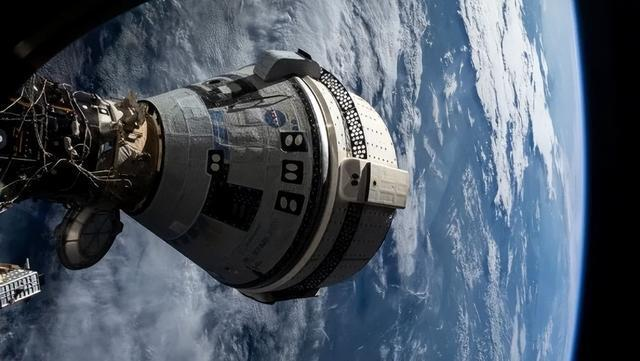
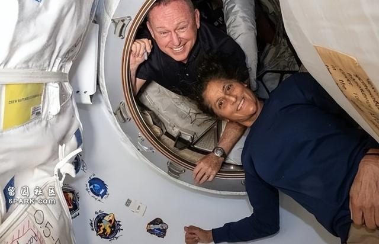
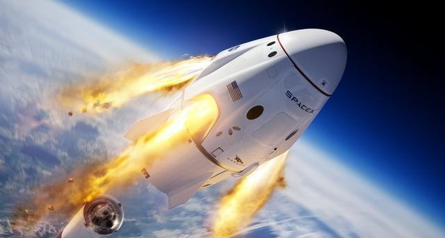
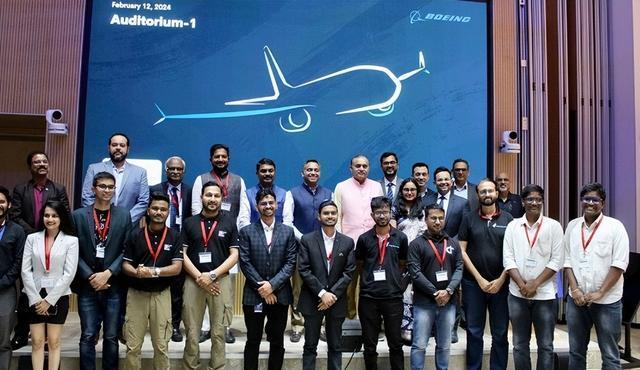
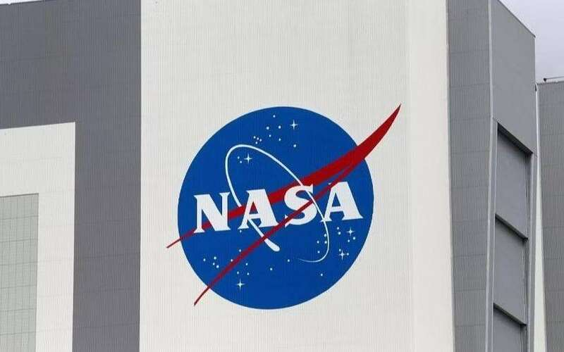

滞留在国际空间站那两名波音宇航员，这下是真的有家不能回了。
据环球网报道，7日美国国家航天局在新闻发布会上承认，其内部对两名波音宇航员搭乘“星际客机”返航仍存在分歧，如果到8月中旬前还无法作出决定，航天局将考虑备用方案，即使用太空探索技术公司（SpaceX）的“龙”飞船“救援”两名宇航员。
我们先来回顾一下这两名波音宇航员这段多灾多难的旅程：两人的搭乘波音“星际客机”飞船在发射升空前，就被检测出密封组件因过热会导致变形等问题，但波音和美国航天局一个为了股价，一个为了脸面，坚称飞船没有任何问题，可以如期发射。

波音飞船现在还没修好
结果惨烈的现实都快把美国航天局和波音的“脸”抽肿了，飞船发射后出现的故障包括但不限于氦气泄漏、5个推进器失灵、过热导致绝缘层脱落等等。幸亏两名宇航员都是巴里和苏尼塔都是执行过多次航天任务的“老手”，最终全凭两人手动操作，才完成了飞船与国际空间站对接。
然后就是“回家”前的漫长等待。这两名宇航员原本仅计划执行为期一周的短暂任务，但时至今日他们已经在空间站滞留了近两个月时间，这两个月以来，波音和美国航天局对飞船什么时候能修好返航始终没有一句准话，从6月初一直推到了8月初。
如美媒所说，目前美国航天局的最新方案是如果波音飞船实在修不好，就发射太空探索技术公司的“龙”飞船接回两名宇航员，不过航天局副局长鲍尔索克斯也承认，现在他们内部还没有就这个计划达成共识。

幸亏两名宇航员“身经百战”
在7日的新闻发布会上，美国航天局官员一连说了18个“不确定”来形容当前波音飞船和国际空间站的局面，对此美媒评价说，这充分反映出航天局内部的悲观情绪。
综合美国“太空新闻”网等媒体报道来看，如果要发射“龙”飞船对接国际空间站，美国航天局为其所谓的“备选方案”准备了两个计划：
“龙”飞船每隔半年会搭载4名宇航员前往空间站执行轮换任务，目前在空间站工作的是8号乘组，即将出发的是9号乘组。

“龙”飞船是NASA最后的希望了
所以美国航天局打算先让波音飞船空载返回，将国际空间站的接口空出来留给“龙”飞船，接着要么取消“龙”飞船两名宇航员的任务，留出两个位置供巴里和苏尼塔乘坐；要么让两人按批次返回地球，即一人跟随轮换的“龙”飞船宇航员离开，另一人继续等待下一艘飞船抵达空间站。
但美媒强调，执行备选方案前提是波音和航天局必须将“星际客机”修好，以便为“龙”飞船留出空间站接口。现在“龙”飞船的发射任务已经因“星际客机”占用接口而被推迟，如果后者无法离开空间站，那么无论哪种计划都是免谈。而且即使一切进展顺利，那两名波音宇航员也要等到明年2月才能搭乘“龙”飞船返航。

波音变“印企”指日可待
只能说，这两名波音宇航员“下不来”、营救飞船“上不去”的尴尬窘境，还只是美国去工业化之后的缩影之一。
先前曾有媒体爆料称，如今波音在印度招聘的工程师数量是在中国的20倍——先不说中印工程师水平差距如何，当像波音这样的航空航天巨头都沦落到要去国外大量招聘技术人员，可想而知美国本土的人才已经凋敝到什么地步，毕竟当只需要在华尔街动动手指就能赚钱的时候，也就没有美国人愿意下功夫钻研航空航天。
美航天局：滞留太空的美宇航员或将搭乘载人“龙”飞船返回
据央视新闻消息，当地时间8月7日，美国国家航空航天局商业机组人员项目经理史蒂夫·斯蒂奇在与记者的电话会议中表示，任务控制中心仍未确定滞留太空的美宇航员的返回日期，并表示或将使用美国太空探索技术公司（SpaceX）的载人“龙”飞船作为备用计划。
斯蒂奇表示，如果波音“星际客机”的机组人员需要SpaceX的载人“龙”飞船，那么两名宇航员都将加入“Crew-9”任务并于2025年2月返回。目前，美国国家航空航天局尚未做出最终决定。

6月6日，美国宇航员巴里·威尔莫尔和苏尼·威廉姆斯乘坐“星际客机”飞船飞抵国际空间站，原定于6月14日返回地球，但由于飞船推进器故障和氦气泄漏等问题，返航时间一再推迟。这是“星际客机”的首次载人试飞。到本月6日，威尔莫尔和威廉姆斯已在国际空间站滞留两个月。